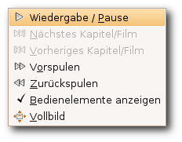
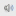
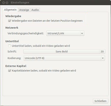

Totem
Dieser Artikel wurde für die folgenden Ubuntu-Versionen getestet:
Ubuntu 16.04 Xenial Xerus
Ubuntu 14.04 Trusty Tahr
Zum Verständnis dieses Artikels sind folgende Seiten hilfreich:
Videos  , besser bekannt als Totem, ist der Standard-Medienspieler der Desktop-Umgebungen GNOME und Xfce (ab Xubuntu 10.10 wird stattdessen Parole verwendet). Das Programm greift zur Wiedergabe auf das Multimedia-Framework GStreamer zurück.
, besser bekannt als Totem, ist der Standard-Medienspieler der Desktop-Umgebungen GNOME und Xfce (ab Xubuntu 10.10 wird stattdessen Parole verwendet). Das Programm greift zur Wiedergabe auf das Multimedia-Framework GStreamer zurück.
Das Programm unterstützt unter anderem:
Wiedergabe diverser Audio-/Videoformate
Ausgabe des Bildes auf ein TV-Gerät
Fortsetzen von bereits begonnenen Wiedergaben
DVB-Wiedergabe (Digital-TV)
Lirc (Fernbedienung)
Tastaturnavigation
Aufnahme von Bildschirmfotos
Untertitelanzeige
Abspielen und Suchen von YouTube
 Videos, wenn auch (eingeschränkt )
Videos, wenn auch (eingeschränkt )
Zusätzlich kann Totem durch Plugins erweitert werden.
Installation¶
Totem kann über folgendes Paket installiert [1] werden:
totem
 mit apturl
mit apturl
Paketliste zum Kopieren:
sudo apt-get install totem
sudo aptitude install totem
Anschließend findet man es bei Ubuntu-Varianten mit einem Anwendungsmenü unter "Multimedia -> Video-Player".
Player¶
| Player | |
| Menüelement | Beschreibung |
| Medium (DVD, CD, Datei ...) zur Wiedergabe auswählen. | |
| Bildschirmfoto, Einstellungen und zusätzliche Wiedergabeoptionen | |
| Anzeigebereich verändern | |
| Spulen im Film oder Musikstück | |
| Lautstärke anpassen / Sprache wählen | |
Film¶
Um einen Film oder ein Musikstück zu öffnen, wählt man unter "Film -> Öffnen..." die entsprechende Datei aus. Um einen Radiostream abzuspielen, diesen im Menüpunkt "Film -> Ort öffnen..." eintragen.
Einfacher funktioniert das Abspielen einer DVD, VCD oder CD. Nachdem das entsprechende Medium in das Laufwerk gelegt wurde, muss im Programm nur unter "Film" die entsprechende Wiedergabe gestartet werden.
Ansicht¶
Unter "Ansicht" kann das Größenverhältnis des wiederzugebenden Mediums geändert werden. So kann z.B. ein Film unter anderem im Vollbild, in Originalgröße, im Seitenverhältnis 16:9 dargestellt und mit dem gewünschten Untertitel wiedergegeben werden. Außerdem können hier Bedienelemente des Players ein- oder ausgeblendet werden.
Gehe zu¶
Dieses Menü gestattet die Navigation durch die verschiedensten Menüs des eingelegten Mediums, z.B. das Hauptmenü einer DVD. Außerdem findet man hier die Möglichkeit, innerhalb des gespielten Stücks bzw. Films zu spulen .
Audio¶
Hier können die Lautstärke geregelt sowie die Tonspur bei der Wiedergabe einer DVD unter "Audio -> Sprachen" gewechselt werden.

Wiedergabe¶
Die Schnellnavigation erlaubt es, innerhalb des gewählten Titels zu navigieren und mittels  die Lautstärke zu ändern. Man kann die wichtigsten Steuerungsoptionen ebenfalls über einen Rechtsklick im Wiedergabefenster erreichen. Hier öffnet sich dann der rechts zu sehende Dialog.
Wiedergabeliste¶
In der Wiedergabeliste werden die Dateien angezeigt, welche wiedergegeben werden. Neben Audiodateien können dies Videodateien sowie TV-Sender sein. Um diese Liste ein- bzw. auszublenden, genügt ein Klick auf . Die Dateien können entweder aus einem Dateimanager per Drag&Drop hinzugefügt werden oder über . Die Sortierung der Titel ist selbsterklärend.
| Wiedergabeliste | |
| Menüelement | Beschreibung |
| Der Liste eine Datei (Audiotrack, Videodatei,...) hinzufügen. | |
| Löschen einer Datei aus der Wiedergabeliste. | |
| Die Wiedergabeliste als Datei z.B. TV.pls abspeichern. | |
 | Verschieben eines Titels innerhalb der Wiedergabeliste, z.B. zum Sortieren der Dateien. |

Konfiguration¶
Um Einstellungen am Player vorzunehmen, öffnet man unter "Bearbeiten -> Einstellungen" die entsprechende Option. Es öffnet sich ein Fenster, welches sich in drei Kategorien unterteilt:
Allgemein¶
Mithilfe der Option "Wiedergabe von Dateien an der letzten Position beginnen" lassen sich pausierte/geschlossene Dateien von der letzten Wiedergabestelle fortsetzen, unabhänig davon, ob die Datei in der Zwischenzeit verschoben/umbenannt wurde. Unter "Netzwerkanbindung" kann man die Geschwindigkeit der zur Verfügung stehenden Verbindung einstellen. Im Menüpunkt "Untertitel" kann man die Schriftart und -größe für die Untertitel anpassen.
Anzeige¶
Unter "Anzeige" können unter anderem verschiedenste Einstellungen zu "Helligkeit, Kontrast, Sättigung" und "Farbton" vorgenommen werden. Hierzu die entsprechenden Regler den persönlichen Vorlieben entsprechend verschieben. Außerdem kann in diesem Reiter eingestellt werden, ob sich die Fenstergröße bei der Wiedergabe eines neuen Videos automatisch anpassen soll oder nicht. Unter "Visuelle Effekte" ist es möglich, falls gewünscht, den Visualisierungstyp bei der Audiowiedergabe festzulegen.
Audio¶
Unter "Audio-Ausgabe" kann der Audio-Ausgabetyp bestimmt werden. Neben "Stereo, 5.1 Kanal" stehen verschiedene Optionen zur Verfügung.
Plugins¶
Der Funktionsumfang von Totem lässt sich über verschiedene Plugins erweitern. Nähere Informationen finden sich auf der Seite Totem/Plugins.
Tastaturkürzel¶
| Tastenkürzel | |
| Menüelement | Beschreibung |
| P | Wiedergabe starten / stoppen |
| N | nächster Track |
| B | vorheriger Track |
| → | Vorspulen |
| ← | Zurückspulen |
| S | An Stelle X springen. |
| Strg + O | Film-/Wiedergabeliste öffnen |
| Strg + S | Bildschirmfoto aufnehmen |
| F | Vollbild ein/aus |
| H | Bedienelemente ein/ausblenden |
| F9 | Wiedergabeliste ein/ausblenden |
| Strg + Q | Programm beenden |
Problembehebung¶
Möchte man Musik mit Streamripper aufnehmen und gleichzeitig mit Totem hören, funktioniert die Relay-Funktion von Streamripper nur mit:
totem http://localhost:8000/
Das / am Ende ist zwingend erforderlich! Weitere Möglichkeiten sind (Standard ist MP3):
totem http://localhost:8000/ totem http://localhost:8000/.ogg totem http://localhost:8000/;stream.nsv
 Programmübersicht
Programmübersicht- Erstellt mit Inyoka
-
 2004 – 2017 ubuntuusers.de • Einige Rechte vorbehalten
2004 – 2017 ubuntuusers.de • Einige Rechte vorbehalten
Lizenz • Kontakt • Datenschutz • Impressum • Serverstatus -
Serverhousing gespendet von